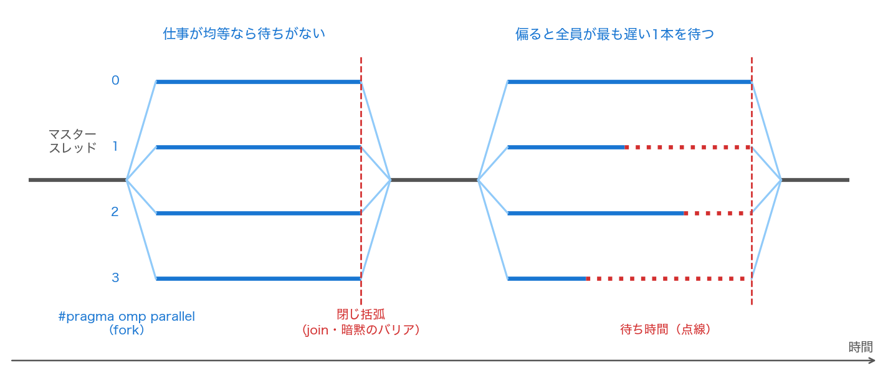

OpenMP の基本
OpenMP は、逐次プログラムに指示行（directive）を書き足すだけで共有メモリ並列にできる仕組みである。言語ではなく、C・C++・Fortran のコンパイラに対する拡張として定義されている。
最大の特徴は、指示行を無視しても正しい逐次プログラムのままという点にある。#pragma は、対応していないコンパイラからは単なるコメントとして読み飛ばされる。したがって、
- 並列化を有効にしないでビルドすれば、逐次版がそのまま動く
- 逐次版と並列版で同じソースを使える
- 並列版の答えがおかしいとき、逐次版と1行ずつ突き合わせられる
——というデバッグ上の利点が生まれる。この「逐次に落とせる」性質は本回を通じて何度も使う。
fork–join モデル
OpenMP の実行モデルは単純である。プログラムは1本のスレッド（マスタースレッド）として始まり、#pragma omp parallel に出会うと複数のスレッドに枝分かれ（fork）し、対応するブロックの閉じ括弧で合流（join）して再び1本に戻る。
printf("ここは1本\n");
#pragma omp parallel /* ← ここで fork */
{
/* このブロックを全スレッドが実行する */
} /* ← ここで join（暗黙のバリア） */
printf("ここも1本\n");

#pragma omp parallel で枝分かれし、閉じ括弧で合流する。閉じ括弧には暗黙のバリアがあり、全スレッドが到着するまで先へ進めない。左は仕事が均等に分かれた場合、右は偏った場合——偏ると、全員がもっとも遅い1本を待つ。並列領域の所要時間を決めるのは平均ではなく最大である。閉じ括弧に暗黙のバリア（barrier）があることが重要である。合流点では全スレッドの到着を待つので、並列領域にかかる時間は各スレッドの所要時間の平均ではなく最大で決まる。図の右のように仕事が偏ると、早く終わったスレッドは何もせずに待つ。この「待ち」をなくすのが負荷分散（load balancing）であり、演習1で実際に測る。
なお、スレッド数は次の優先順位で決まる。
- 指示行の
num_threads(4)節 - プログラム中の
omp_set_num_threads(4) - 環境変数
OMP_NUM_THREADS -
何も指定しなければ処理系まかせ（多くの実装は論理コア数を採る）
4 番目は仕様が値を決めていない（implementation-defined）。実測値を比べるときは
num_threadsかOMP_NUM_THREADSで明示的に固定すること。本ページのサンプルコードもそうしている。
ループを分ける: parallel for
実際にもっともよく使うのは、parallel と for を組み合わせた形である。
この1行で、\(0\) から \(n-1\) までの反復がスレッドに分配される。分け方は schedule 節で指定でき、schedule(static) なら4スレッドで \(n/4\) 個ずつの連続した塊になる。何も書かなかったときにどう分けるかは仕様が決めていない（実際には static 相当を採る実装が多い）ので、分け方に依存する測定をするときは schedule(static) のように明示すること。
ただし、どのループでも付けてよいわけではない。OpenMP は正しさを検査しない。付けてよいのは、
- 反復回数がループに入る前に確定している（
forの形が決まっている。whileやbreakを含むループは不可） - 反復どうしに依存がない——つまり、\(i\) 番目の反復が \(j\) 番目の結果を読んだり上書きしたりしない
という2条件を満たすときだけである。2つ目が破れている例が、
である。第10回のガウス＝ザイデル法が素朴には並列化できないのも、まさにこの形をしているからである（演習3で、順序を組み替えて依存を断ち切る）。
対照的に、ヤコビ法は右辺がすべて前の反復の配列なので、この条件を完全に満たす。次ページで主役になる理由である。
総和はそのままでは並列化できない
依存がないループの例外が、総和である。
反復どうしは独立に見えるが、すべての反復が同じ変数 s を書き換える。s += v は機械語では
sの値をレジスタに読むvを足す- 結果を
sに書く
の3手であり、この途中で別のスレッドが割り込むと、片方の更新が上書きされて消える。これがデータ競合（data race）である。
たちが悪いのは、コンパイルエラーにも実行時エラーにもならないことである。プログラムは正常に終了し、それらしい値を返す。実際、例題1の \(\pi\) を4スレッドで 5 回計算すると、5 回とも間違った値になる（--- (3) の出力）。しかも間違い方は毎回違う。
正しい書き方は reduction 節である。
reduction(+:s) は、
- スレッドごとに
sのprivate なコピーを作り、\(0\)（+の単位元）で初期化する - 各スレッドは自分のコピーに足し込む（競合しない）
- 並列領域を抜けるときに、1度だけ全コピーを元の
sに足し合わせる
という処理を生成する。同期は最後の1回だけなので速い。演算子は + * - & | ^ && || min max が使える。
答えがビット単位では一致しないこと
reduction(+:s) を使うと、足す順序が逐次版と変わる。浮動小数点の加算は結合則を満たさないので、答えは最終桁で変わりうる。実際、例題1では
- 逐次:
3.141592653589961 reduction:3.141592653589730- 差: \(2.314\times10^{-13}\)
となる。これはバグではなく正常な挙動である。並列化したら答えが最終桁で変わった、というのは想定しておくべきことであって、驚く場面ではない。
逆に言えば、並列版と逐次版をビット単位で比較する検証は使えない。許容誤差を決めて比べるか、次ページのように順序に依存しない集約（最大値ノルムなど）で比べる必要がある。
配列の各要素を更新するとき
reduction が使えるのはスカラー変数への集約である。では、ヒストグラムのように配列の各要素に足し込む場合はどうするか。
対処は3通りある。
(1) critical: ブロックまるごとを排他にする。
正しいが、全スレッドが1本の門に並ぶ。並列化した意味がほとんどなくなる。
(2) atomic: 直後の1文の読み・更新・書きを不可分にする。
critical より軽い（多くの環境で専用の機械語命令になる）が、やはり更新のたびに同期が入る。しかも、少数の要素を多数のスレッドが取り合うと、その要素を含むキャッシュラインがコアの間を往復し続ける。演習2では、atomic 版が逐次版より約 150 倍遅くなることを実測する。
(3) スレッドごとに部分結果を持ち、最後に1度だけ合流する。reduction が内部でやっていることを、自分で書く。
#pragma omp parallel
{
long *p = part + (size_t)omp_get_thread_num()*pad; /* 自分専用の領域 */
#pragma omp for
for (long i = 0; i < n; i++) p[v[i]]++;
}
for (int t = 0; t < nth; t++) /* 最後に1度だけ合流 */
for (int b = 0; b < NB; b++) h[b] += part[t*pad + b];
これが正解である。同期の回数を反復回数（\(n\) 回）から階級数（\(NB\) 回）に減らす——これが並列化の要点であって、「排他制御で守る」ではない。OpenMP 4.5 以降では reduction(+:h[:NB]) と書けば同じことを処理系に任せられる。
「守れば正しくなる」と「守れば速くなる」は別の話である。競合を排他制御で押さえ込むのではなく、競合そのものが起きない構造に変える——これが並列プログラミングの基本姿勢である。
共有してはいけないものを共有する誤り
データ競合は総和だけの話ではない。並列領域の外で宣言された変数は、既定ですべて共有（shared）になる。
double *w = malloc(K*sizeof(double)); /* 並列領域の外＝共有 */
#pragma omp parallel for
for (int i = 0; i < m; i++) {
for (int j = 0; j < K; j++) w[j] = sin(i*0.001 + j); /* ← 全スレッドが同じ w を壊し合う */
double s = 0.0;
for (int j = 0; j < K; j++) s += w[j];
b[i] = s;
}
作業配列 w を1本しか用意していないので、あるスレッドが書いた値を別のスレッドが読んでしまう。実測では 5 回試して 5 回とも間違った答えになる。
ここでよくある誤解を1つ潰しておく。
private(w) も firstprivate(w) も直らない（しかも壊れ方が違う）
w そのものであって、w が指す先の配列ではない。malloc された領域は複製されない。ただし2つの節では壊れ方が違う。
private(w): スレッドごとに新しいwが作られるが、初期化されない。値は不定なので、w[j]への書き込みは未定義動作である（多くの環境ではセグメンテーション違反で落ちる）。元の配列を指し続けるわけではない。firstprivate(w): コピーが元のアドレスで初期化される。だから全スレッドが同じ1本の配列を指し、元のデータ競合がそのまま残る。
つまり private は「動かなくなる」、firstprivate は「黙って間違え続ける」。ポインタで確保した作業領域は、並列領域の中でスレッドごとに確保するか、ループの中で宣言する。
正しい書き方は2つある。
/* (a) スレッドごとに確保する */
#pragma omp parallel
{
double *wp = malloc(K*sizeof(double)); /* スレッドごとに1本ずつ */
#pragma omp for
for (int i = 0; i < m; i++) { /* wp を使う */ }
free(wp);
}
/* (b) ループの中で宣言する（もっとも安全） */
#pragma omp parallel for
for (int i = 0; i < m; i++) {
double wl[8]; /* 反復ごとに別の実体になる */
/* wl を使う */
}
(b) を既定の書き方にすること。ループの中で宣言された変数は自動的にスレッドごと（正確には反復ごと）の実体を持つので、private 節を書く必要すらない。「一時変数はできるだけ狭いスコープで宣言する」という、逐次プログラムでも推奨される書き方が、並列化の際にそのまま安全性になる。
並列化の前に確認する4項目
- ループの反復回数は入る前に確定しているか（
while・break・returnがないか） - 反復どうしに依存はないか（\(i\) 番目が \(i-1\) 番目の結果を読んでいないか）
- 並列領域の外で宣言した変数のうち、書き込むものはないか（あれば
reductionか、スコープを狭める） - ポインタで確保した作業領域を共有していないか
サンプルコード
#include <stdio.h>
#include <stdlib.h>
#include <math.h>
#include <omp.h>
/* 第14回 OpenMP の基本: fork-join・reduction・データ競合
例題は数値積分 pi = int_0^1 4/(1+x^2) dx（中点則）。
足し算の順序を変えても答えは変わらない——という前提が、共有変数への
同時書き込みで崩れることを実際に見る。
スレッド数は実行環境によらず 4 に固定して比較する。 */
static const double PI = 3.14159265358979323846;
static double f(double x) { return 4.0/(1.0 + x*x); }
/* 逐次版 */
static double pi_serial(long n)
{
double h = 1.0/n, s = 0.0;
for (long i = 0; i < n; i++) s += f((i + 0.5)*h);
return s*h;
}
/* reduction 付き（正しい並列化） */
static double pi_reduction(long n)
{
double h = 1.0/n, s = 0.0;
#pragma omp parallel for reduction(+:s)
for (long i = 0; i < n; i++) s += f((i + 0.5)*h);
return s*h;
}
/* 保護なしで共有変数に足し込む（誤り。データ競合が起きる） */
static double pi_race(long n)
{
double h = 1.0/n, s = 0.0;
#pragma omp parallel for
for (long i = 0; i < n; i++) s += f((i + 0.5)*h);
return s*h;
}
/* critical で囲む（正しいが遅い） */
static double pi_critical(long n)
{
double h = 1.0/n, s = 0.0;
#pragma omp parallel for
for (long i = 0; i < n; i++) {
double v = f((i + 0.5)*h);
#pragma omp critical
s += v;
}
return s*h;
}
/* atomic で守る（critical より軽いが、やはり毎回同期する） */
static double pi_atomic(long n)
{
double h = 1.0/n, s = 0.0;
#pragma omp parallel for
for (long i = 0; i < n; i++) {
double v = f((i + 0.5)*h);
#pragma omp atomic
s += v;
}
return s*h;
}
int main(void)
{
long n = 20000000;
printf("=== OpenMP の基本 ===\n\n");
printf(" この環境の既定スレッド数: %d\n", omp_get_max_threads());
omp_set_num_threads(4);
printf(" 以下の実験ではスレッド数を 4 に固定する。\n\n");
/* --- (1) fork-join --- */
printf("--- (1) fork-join: 並列領域の中と外 ---\n");
printf(" 並列領域の外のスレッド数: %d\n", omp_get_num_threads());
{
int nth = 0, idsum = 0;
#pragma omp parallel
{
#pragma omp atomic
idsum += omp_get_thread_num();
#pragma omp master
nth = omp_get_num_threads();
}
printf(" 並列領域の中のスレッド数: %d\n", nth);
printf(" スレッド番号の合計: %d（0+1+2+3 = 6。どの順で走っても合計は変わらない）\n", idsum);
}
printf(" 並列領域を抜けた後のスレッド数: %d\n", omp_get_num_threads());
printf(" #pragma omp parallel で枝分かれ（fork）し、閉じ括弧で合流（join）する。\n");
/* --- (2) 正しい並列化 --- */
printf("\n--- (2) 数値積分 pi = int_0^1 4/(1+x^2) dx、中点則 n = %ld ---\n", n);
{
double a = pi_serial(n);
double b = pi_reduction(n);
printf(" 逐次 : %.15f （pi との差 %9.3e）\n", a, fabs(a - PI));
printf(" reduction : %.15f （pi との差 %9.3e）\n", b, fabs(b - PI));
printf(" 逐次との差 : %9.3e\n", fabs(a - b));
printf(" 丸め誤差の水準で一致する。ただし 0 ではない——足す順序が違うからである。\n");
printf(" 並列化すると答えがビット単位で変わりうる、というのは正常な挙動である。\n");
}
/* --- (3) データ競合 --- */
printf("\n--- (3) 保護せずに共有変数へ足し込むとどうなるか ---\n");
printf(" s += ... を #pragma omp parallel for で囲むだけにする。\n");
printf(" 「読む → 足す → 書く」の途中で別のスレッドが割り込むと、更新が消える。\n\n");
{
int good = 0, trials = 5;
for (int t = 0; t < trials; t++) {
double r = pi_race(n);
if (fabs(r - PI) < 1e-6) good++;
}
printf(" %d 回試して正しい値が得られたのは %d 回\n", trials, good);
printf(" しかもコンパイルエラーにも実行時エラーにもならない。黙って間違った答えを返す。\n");
printf(" これがデータ競合（data race）の恐ろしさである。\n");
}
/* --- (4) 正しい直し方 --- */
printf("\n--- (4) 直し方は3つある ---\n");
{
double c = pi_critical(n), d = pi_atomic(n), e = pi_reduction(n);
/* critical と atomic は「先に着いたスレッドから足す」ので、足す順序が
実行のたびに変わる。値そのものは実行ごとに最終桁が変わるため、
正しさの判定だけを表示する。 */
printf(" critical : pi との差 < 1e-10 か … %s\n", fabs(c - PI) < 1e-10 ? "はい" : "いいえ");
printf(" atomic : pi との差 < 1e-10 か … %s\n", fabs(d - PI) < 1e-10 ? "はい" : "いいえ");
printf(" reduction : pi との差 < 1e-10 か … %s（値 %.15f）\n",
fabs(e - PI) < 1e-10 ? "はい" : "いいえ", e);
printf(" どれも正しい値を返す。速さは reduction >> atomic > critical である\n");
printf(" （reduction はスレッドごとに部分和を持ち、最後に一度だけ合流するため）。\n");
printf(" critical と atomic は足す順序が実行ごとに変わるので、最終桁も毎回変わる。\n");
printf(" reduction はスレッド数を固定すれば分担が決まるので、値まで再現する。\n");
}
/* --- (5) 共有してはいけないものを共有する誤り --- */
printf("\n--- (5) 作業配列を1本だけ共有してしまう誤り ---\n");
printf(" 各反復で作業配列 w[] を使う計算 b[i] = sum_j sin(i h + j) を考える。\n");
{
int m = 200000, K = 8;
double *a = malloc(m*sizeof(double));
double *b = malloc(m*sizeof(double));
double *w = malloc(K*sizeof(double)); /* 全スレッドで共有される作業配列 */
int good = 0, trials = 5;
for (int i = 0; i < m; i++) { /* 正解（逐次） */
double s = 0.0;
for (int j = 0; j < K; j++) s += sin(i*0.001 + j);
a[i] = s;
}
for (int t = 0; t < trials; t++) {
#pragma omp parallel for
for (int i = 0; i < m; i++) {
for (int j = 0; j < K; j++) w[j] = sin(i*0.001 + j);
double s = 0.0;
for (int j = 0; j < K; j++) s += w[j];
b[i] = s;
}
int ok = 1;
for (int i = 0; i < m; i++) if (a[i] != b[i]) { ok = 0; break; }
good += ok;
}
printf(" w を1本だけ共有した場合 : %d 回中 %d 回しか正しくない\n", trials, good);
/* private 節を付ければスレッドごとに別の配列になる…わけではない。
複製されるのはポインタ変数だけで、malloc した領域は複製されない。
private(w) : 複製された w は未初期化 → w[j] への代入は未定義動作
firstprivate(w) : 複製された w は同じアドレス → 競合はそのまま残る
スレッドごとに確保するか、並列領域の中で宣言する必要がある。 */
{
#pragma omp parallel
{
double *wp = malloc(K*sizeof(double)); /* スレッドごとに1本ずつ */
#pragma omp for
for (int i = 0; i < m; i++) {
for (int j = 0; j < K; j++) wp[j] = sin(i*0.001 + j);
double s = 0.0;
for (int j = 0; j < K; j++) s += wp[j];
b[i] = s;
}
free(wp);
}
int ok = 1;
for (int i = 0; i < m; i++) if (a[i] != b[i]) { ok = 0; break; }
printf(" スレッドごとに w を確保した場合 : %s\n", ok ? "正しい" : "誤り");
}
/* ループの中で宣言すれば自動的にスレッドごとになる（最も安全） */
{
#pragma omp parallel for
for (int i = 0; i < m; i++) {
double wl[8]; /* ループの中で宣言 */
for (int j = 0; j < K; j++) wl[j] = sin(i*0.001 + j);
double s = 0.0;
for (int j = 0; j < K; j++) s += wl[j];
b[i] = s;
}
int ok = 1;
for (int i = 0; i < m; i++) if (a[i] != b[i]) { ok = 0; break; }
printf(" ループの中で宣言した場合 : %s\n", ok ? "正しい" : "誤り");
}
printf(" 作業用の領域はループの中で宣言するか、スレッドごとに確保する。\n");
printf(" private(w) や firstprivate(w) では直らない。複製されるのはポインタ変数だけで、\n");
printf(" malloc した領域は複製されない（前者は未初期化で未定義動作、後者は競合が残る）。\n");
free(a); free(b); free(w);
}
return 0;
}
コンパイル・実行:
# Linux / Docker（gcc）
gcc -O2 -Wall -std=c11 -fopenmp openmp_intro.c -o openmp_intro -lm
# macOS（Homebrew の libomp を入れたうえで）
cc -O2 -Wall -std=c11 -Xpreprocessor -fopenmp -I$(brew --prefix libomp)/include \
openmp_intro.c -o openmp_intro -L$(brew --prefix libomp)/lib -lomp -lm
./openmp_intro
実行結果
=== OpenMP の基本 ===
この環境の既定スレッド数: 12
以下の実験ではスレッド数を 4 に固定する。
--- (1) fork-join: 並列領域の中と外 ---
並列領域の外のスレッド数: 1
並列領域の中のスレッド数: 4
スレッド番号の合計: 6（0+1+2+3 = 6。どの順で走っても合計は変わらない）
並列領域を抜けた後のスレッド数: 1
#pragma omp parallel で枝分かれ（fork）し、閉じ括弧で合流（join）する。
--- (2) 数値積分 pi = int_0^1 4/(1+x^2) dx、中点則 n = 20000000 ---
逐次 : 3.141592653589961 （pi との差 1.679e-13）
reduction : 3.141592653589730 （pi との差 6.350e-14）
逐次との差 : 2.314e-13
丸め誤差の水準で一致する。ただし 0 ではない——足す順序が違うからである。
並列化すると答えがビット単位で変わりうる、というのは正常な挙動である。
--- (3) 保護せずに共有変数へ足し込むとどうなるか ---
s += ... を #pragma omp parallel for で囲むだけにする。
「読む → 足す → 書く」の途中で別のスレッドが割り込むと、更新が消える。
5 回試して正しい値が得られたのは 0 回
しかもコンパイルエラーにも実行時エラーにもならない。黙って間違った答えを返す。
これがデータ競合（data race）の恐ろしさである。
--- (4) 直し方は3つある ---
critical : pi との差 < 1e-10 か … はい
atomic : pi との差 < 1e-10 か … はい
reduction : pi との差 < 1e-10 か … はい（値 3.141592653589730）
どれも正しい値を返す。速さは reduction >> atomic > critical である
（reduction はスレッドごとに部分和を持ち、最後に一度だけ合流するため）。
critical と atomic は足す順序が実行ごとに変わるので、最終桁も毎回変わる。
reduction はスレッド数を固定すれば分担が決まるので、値まで再現する。
--- (5) 作業配列を1本だけ共有してしまう誤り ---
各反復で作業配列 w[] を使う計算 b[i] = sum_j sin(i h + j) を考える。
w を1本だけ共有した場合 : 5 回中 0 回しか正しくない
スレッドごとに w を確保した場合 : 正しい
ループの中で宣言した場合 : 正しい
作業用の領域はループの中で宣言するか、スレッドごとに確保する。
private(w) や firstprivate(w) では直らない。複製されるのはポインタ変数だけで、
malloc した領域は複製されない（前者は未初期化で未定義動作、後者は競合が残る）。
--- (3) と --- (5) は、どちらも 5 回試して 0 回しか正しくない——それでいてエラーは一度も出ない。これが並列プログラムの誤りのもっとも一般的な現れ方である。
第2回から第13回まで、誤りは「発散する」「精度が出ない」という目に見える形で現れた。並列化の誤りはそうならない。プログラムは完走し、それらしい値を返す。だから、並列化したら必ず
- 逐次版と（許容誤差の範囲で）突き合わせる
- スレッド数を変えて答えが変わらないことを確かめる
の2つを検証手順に組み込む。次ページで見るように、ヤコビ反復のように設計上ビット単位で一致するはずのカーネルなら、後者は特に強力な検査になる。
まとめ
- OpenMP は指示行で共有メモリ並列を実現する。指示行を無効にすればそのまま逐次版になり、この性質が検証に使える。
- 実行モデルは fork–join。閉じ括弧の暗黙のバリアにより、並列領域の時間は各スレッドの最大で決まる。だから負荷分散が効く。
#pragma omp parallel forを付けてよいのは、反復回数が確定していて反復間に依存がないループだけ。OpenMP は正しさを検査しない。- 共有変数への足し込みは
reduction(+:s)を使う。スレッドごとに部分和を持ち、最後に1度だけ合流するので速い。 reductionを使うと足す順序が変わるので、答えは最終桁で変わりうる。これは正常な挙動であり、検証は許容誤差か順序非依存の集約で行う。- 配列への足し込みは
critical/atomic/ スレッドごとの部分結果の3通り。前2者は正しいが遅い。同期の回数を減らす構造に変えるのが正解である。 - 並列領域の外の変数は既定で共有。作業配列はループの中で宣言するかスレッドごとに確保する。
private(ptr)/firstprivate(ptr)が複製するのはポインタ変数だけで、指す先の領域は複製されない（前者は未初期化で未定義動作、後者はアドレスが共有されたままで競合が残る）。 - 並列化の誤りはエラーを出さずに黙って間違える。逐次版との突き合わせとスレッド数を変えた再現性確認を、必ず手順に入れる。